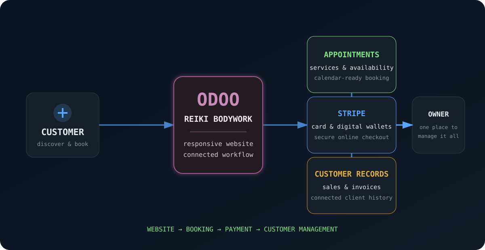

rafael@cloud:~/projects$ cat reiki-bodywork-odoo.md
Reiki Bodywork Odoo Platform
A live, premium digital experience and connected business workflow for a Gold Coast wellbeing practice.

Project Outcome
Live
Designed, configured and launched a responsive Odoo website for Reiki Bodywork. The solution gives customers a polished path from discovering treatments to booking an appointment, while giving the business a central place to manage availability, customers, payments and invoice records.
Business Challenge
The practice needed more than a brochure website. It required a premium brand presentation together with practical day-to-day tools for treatment selection, live appointment availability, online payments, customer communication and tax-ready transaction records.
Platform & Skills
What I Delivered
✓ Designed a high-end, mobile-responsive website aligned with the Reiki Bodywork brand
✓ Structured treatment options, packages, locations, reviews and clear booking calls to action
✓ Configured Odoo appointment flows and business availability
✓ Prepared secure card, Apple Pay and Google Pay checkout through Stripe
✓ Connected bookings and sales activity with customer records
✓ Preserved correct customer billing details while presenting Reiki Bodywork as the seller
✓ Configured invoice and receipt workflows suitable for customer records and tax purposes
✓ Added contact, WhatsApp, review and legal-policy pathways
✓ Tested responsive layouts and the customer journey across key pages
Operational Handover
I created a complete client handover pack rather than leaving the owner dependent on the developer. It includes a management and troubleshooting guide, an explanation of how the Odoo applications connect, and a final launch checklist covering Stripe, calendar connection and remaining operational checks.
What This Project Demonstrates
This project combines customer discovery, UX design, business-process thinking and practical platform configuration. It demonstrates my ability to translate a client's real operational needs into a usable digital system, communicate technical decisions clearly and support the customer beyond launch.